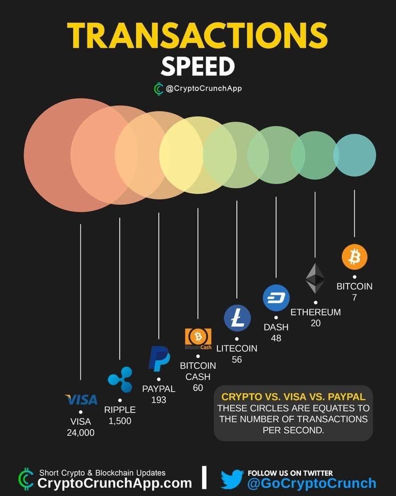

Bitcoin không phải là Cryptocurrency!!!
Tại sao tui lại nói như vậy nhỉ ? Bời vì đơn giản, Bitcoin là Cryptogold.
Nhiều nhà đầu tư, trader đều công nhận rằng nó là một loại vàng điện tử chứ không phải là một dạng đồng tiền, có rất nhiều lý do mà nhiều người nói Bitcoin là một dạng vàng điện tử.
1.Phí giao dịch cao, tốc độ giao dịch chậm
Không giống như các đồng tiền mã hóa hiện đại, Bitcoin đã “quá già” để có thể dùng để giao dịch như một đồng tiền. Tốc độ giao dịch của Bitcoin chỉ là 7 giao dịch cho mỗi giây, có thể tăng lên 100 giao dịch mỗi giây nhưng hiện tại cũng là quá chậm, kèm theo phí hàng chục đô cho mỗi giao dịch đều là những vật cản cho việc Bitcoin là đồng tiền để sử dụng.
Hiện tại mạng lới Lightning network được tạo ra cho Bitcoin cũng khó đưa đồng coin này trở thành một thứ để giao dịch hàng ngày.
2.Sự biến động giá thấp
Tại sao lại thấp? Rõ ràng có khi nó mất giá 20% một ngày mà? Đúng là vậy nhưng nếu đem so Bitcoin với những đồng coin khác thì con số không quá cao. Từng có đợt Bitcoin rớt 5% nhưng những altcoin lại rớt từ 8 cho đến 35%. Rõ ràng đây là một thứ để lưu trữ giá trị hơn là dùng hàng ngày.
3.Kết lại
Bitcoin là cryptogold, một loại tài sản số nhằm để lưu trữ giá trị và không phải là một loại tiền tệ để có thể dùng thanh toán hàng ngày.